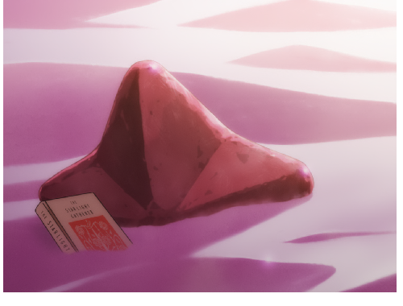
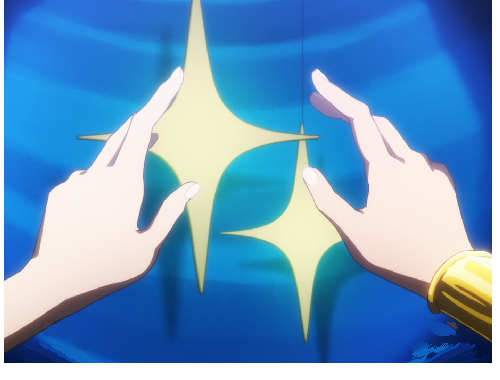
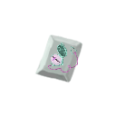
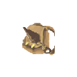
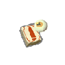
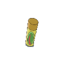
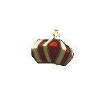

从老 Mod 里找回来的素材
本页所有图片均直接复制自 STS1 Karen Mod 的现有文件，未经过 AI 生成、重绘、裁图或像素修改。每份复制文件均校验 SHA-256 一致；页面仅放大显示原图。这里的“原始文件”指老 Mod 文件，不代表已经核实它们在动画或周边中的最初出处。
找到 20 份遗物图片、2 张相关卡牌大图及 2 份星形素材。其中四件已有对应的遗物图标；普通位和“小小星”仍可比较候选。
查看四件遗物的高清修复对照 →（另页展示，原始素材保持不变）
最新七件图片：七件高清稿与本地清理前后对照（2026-10-11）。本页下方仍保留 STS1 原素材。
四件现成图标
优先以老 Mod 实际使用的原始 PNG 为底稿。
relics/CookieRelic.png老 Mod 已有红色包装图。旧效果也是获取普通、罕见、稀有闪耀牌各一张，可直接以这份图为基准。
查看原文件位置与旧描述
<sts1-karen-mod-source>\src\main\resources\ShoujoKagekiResources\images\relics\CookieRelic.png
旧描述：拾起时，随机获得 #y普通 ， #y罕见 ， #y稀有 #y闪耀 牌各一张。 [饼干] 获取卡牌
relics/CatRelic.png老 Mod 版本有球棒、红帽和球衣；旧效果与本次拟定效果一致。应保留这套造型。
查看原文件位置与旧描述
<sts1-karen-mod-source>\src\main\resources\ShoujoKagekiResources\images\relics\CatRelic.png
旧描述：每次战斗中，每耗尽一张非同名的 #y闪耀牌 ，获得一个 #y闪耀牌奖励 。
relics/MrWhiteRelic.png已有白熊头透明图，可用作原始底稿。旧效果不同，本轮只查素材，不沿用旧效果。
查看原文件位置与旧描述
<sts1-karen-mod-source>\src\main\resources\ShoujoKagekiResources\images\relics\MrWhiteRelic.png
旧描述：在每场战斗开始时，将你牌组中超出30张的部分放入 #y约定牌堆 。
relics/StarCrownRelic.png已有镂空金色冠冕与中央粉色宝石的透明图。老 Mod 名称为“星之皇冠”，本轮暂称“星之王冠”。
查看原文件位置与旧描述
<sts1-karen-mod-source>\src\main\resources\ShoujoKagekiResources\images\relics\StarCrownRelic.png
旧描述：在回合开始时获得 [E] 。 NL 在每个回合开始时， #y禁用 #y2 个 遗物。
小小星与星形发饰
独立星形已经有透明文件；卡牌大图保留了物品在原画面中的样子。
other/Star.pngotherResources 中已有独立透明金色四角星，480 × 524。若“小小星”采用这一造型，可直接以它为参考；该文件本身没有粉色石块的设定。
查看原文件位置
<sts1-karen-mod-source>\otherResources\Star.png

cards/PickStar_p.png《摘星》大图，500 × 380。粉色星形石块轮廓比之前找的手持截图更完整，下方部分埋在沙中、左下有票券。
查看原文件位置
<sts1-karen-mod-source>\src\main\resources\ShoujoKagekiResources\images\cards\PickStar_p.png

cards/Star_p.png《星光闪耀之时》大图，500 × 380。大小两颗四角星清楚；手指遮住部分边缘，可用于星形发饰。
查看原文件位置
<sts1-karen-mod-source>\src\main\resources\ShoujoKagekiResources\images\cards\Star_p.png
ui/Star.png界面用淡黄色四角星，165 × 216。适合作为简化轮廓的对照。
查看原文件位置
<sts1-karen-mod-source>\src\main\resources\ShoujoKagekiResources\images\ui\Star.png
普通位还可以从这两件里选
目前只列素材候选，已确认的临时力量效果保持原样。

relics/DrawExtraRelic.png名字确实叫“怀表牌”，图像是一张印着钟表的牌；并非之前提出的金色实体怀表。代码标有 @AutoAdd.Ignore。
查看原文件位置与旧描述
<sts1-karen-mod-source>\src\main\resources\ShoujoKagekiResources\images\relics\DrawExtraRelic.png
旧描述：若回合内没有额外抽牌，则于下回合额外抽 #y1 张牌
relics/TeaCupRelic.png老 Mod 已有茶杯图，其旧效果与临时力量相关。可作为普通位的另一件物品候选；效果名称均尚未替换。
查看原文件位置与旧描述
<sts1-karen-mod-source>\src\main\resources\ShoujoKagekiResources\images\relics\TeaCupRelic.png
旧描述：每从 #y约定牌堆 取出 #y2 张牌，获得 #y1 #y临时力量 。
其他遗物素材
没有中文本地化项的文件保留文件名，不据图片自行命名。存在资源文件不等于目前在卡池中启用。
relics/BagDiscoverRelic.png查看原文件位置
<sts1-karen-mod-source>\src\main\resources\ShoujoKagekiResources\images\relics\BagDiscoverRelic.png

relics/BlackMarketRelic.png查看原文件位置
<sts1-karen-mod-source>\src\main\resources\ShoujoKagekiResources\images\relics\BlackMarketRelic.png
relics/BookMarchRelic.png查看原文件位置与旧描述
<sts1-karen-mod-source>\src\main\resources\ShoujoKagekiResources\images\relics\BookMarchRelic.png
旧描述：在选奖励牌时，可以升级全部卡牌并获取它们。 NL 使用后失效，可通过击杀 #y精英 敌人 重置此遗物。 获取全部

relics/DeckTopRelic.png查看原文件位置
<sts1-karen-mod-source>\src\main\resources\ShoujoKagekiResources\images\relics\DeckTopRelic.png
relics/DragonRelic.png查看原文件位置
<sts1-karen-mod-source>\src\main\resources\ShoujoKagekiResources\images\relics\DragonRelic.png
relics/FlowerRelic.png查看原文件位置与旧描述
<sts1-karen-mod-source>\src\main\resources\ShoujoKagekiResources\images\relics\FlowerRelic.png
旧描述：遗物奖励拥有额外一个选项。

relics/FrogWaterCupRelic.png查看原文件位置与旧描述
<sts1-karen-mod-source>\src\main\resources\ShoujoKagekiResources\images\relics\FrogWaterCupRelic.png
旧描述：每当你获得 #y闪耀牌 时，使其 #y闪耀 增加 #y1 。

relics/Hairpin2Relic.png查看原文件位置与旧描述
<sts1-karen-mod-source>\src\main\resources\ShoujoKagekiResources\images\relics\Hairpin2Relic.png
旧描述：替换 #r发夹 。 NL 在第一回合开始时，获得一张 #y约定之塔+ 。
relics/HairpinRelic.png查看原文件位置与旧描述
<sts1-karen-mod-source>\src\main\resources\ShoujoKagekiResources\images\relics\HairpinRelic.png
旧描述：在第二回合开始时，获得一张 #y约定之塔 。
relics/HelmetRelic.png查看原文件位置与旧描述
<sts1-karen-mod-source>\src\main\resources\ShoujoKagekiResources\images\relics\HelmetRelic.png
旧描述：拾起时，选择一张牌，将其耗能变为0。 选择一张牌 的耗能为 #y0 。
relics/LockRelic.png查看原文件位置与旧描述
<sts1-karen-mod-source>\src\main\resources\ShoujoKagekiResources\images\relics\LockRelic.png
旧描述：这里锁着 #y 。 无可禁用遗物
relics/ShineCardRelic.png查看原文件位置与旧描述
<sts1-karen-mod-source>\src\main\resources\ShoujoKagekiResources\images\relics\ShineCardRelic.png
旧描述：商店中的所有卡牌获得 #y闪耀 3，且打折 #b50% 。
relics/TakeAllRewardCardsRelic.png查看原文件位置
<sts1-karen-mod-source>\src\main\resources\ShoujoKagekiResources\images\relics\TakeAllRewardCardsRelic.png
relics/TapeRelic.png查看原文件位置与旧描述
<sts1-karen-mod-source>\src\main\resources\ShoujoKagekiResources\images\relics\TapeRelic.png
旧描述：现在你可以在休息处为卡牌添加 #y闪耀 。（最多3次）